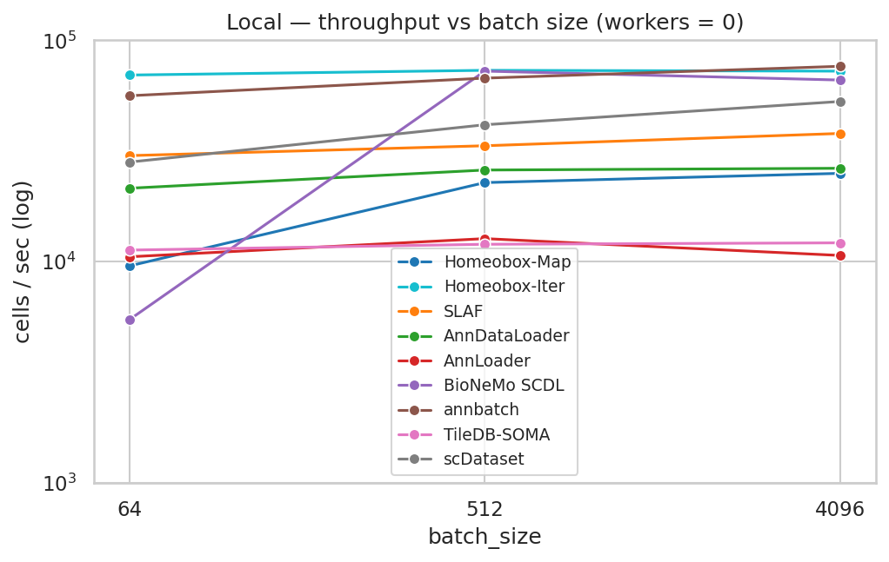
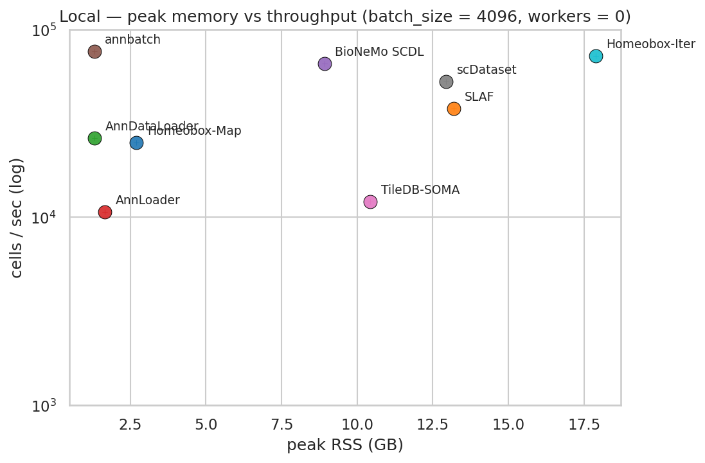
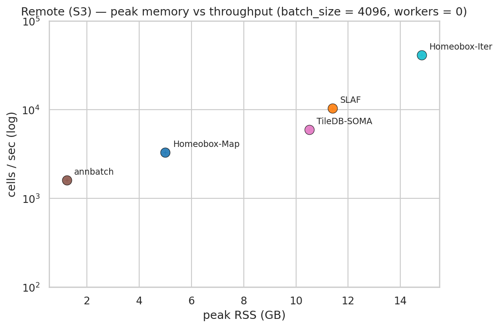
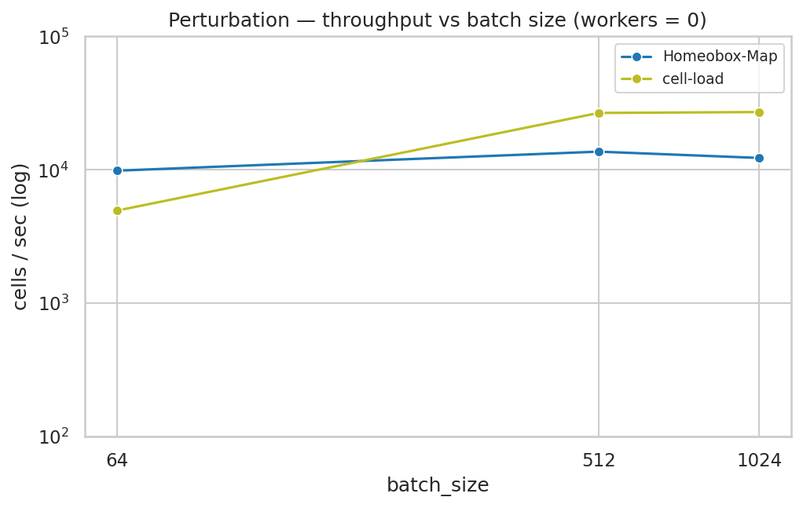
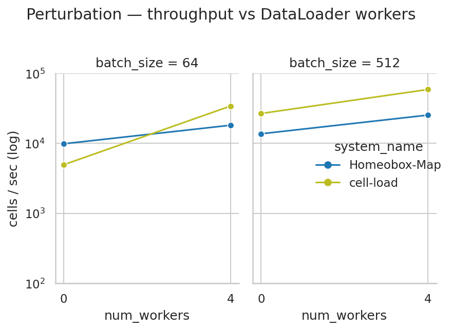
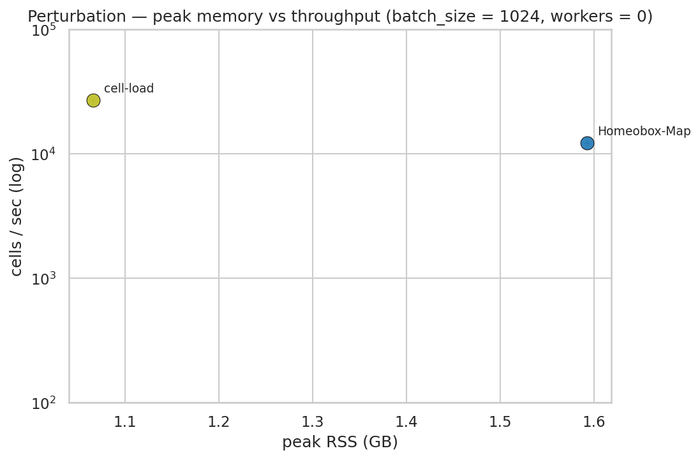

ML Dataloader Benchmarks
Homeobox is designed to serve PyTorch training loops directly out of its zarr-backed atlas. To make throughput claims meaningful, we compare it against commonly used dataloaders in both local and remote settings. The current benchmarks focus on single-cell gene expression data; other modalities (e.g. images) will follow.
Scripts and methodology were adapted from SLAF.
DISCLAIMER: Fair comparisons between dataloaders are hard — shuffling semantics, worker models (multiprocessing vs prefetching threads), remote support, in-memory caching, and per-system tuning all vary. We publish the scripts so anyone can re-run on their own systems and datasets.
Metrics
We measure sustained cells per second delivered to the training loop after a per-system warmup. Memory is recorded as peak RSS across the benchmarked process and its spawn children, sampled at 10 Hz.
Throughput is what training loops care about: a model step cannot start until the next batch is materialised, so the dataloader's steady-state rate caps epochs per wall-hour.
We deliberately do not measure:
- First-batch latency — irrelevant for long training runs and dominated by import / open / mmap costs nobody optimises hard.
- GPU-side preprocessing — systems disagree on what counts as a batch (CSR vs dense vs tokenized), so we stop at "raw data delivered to Python."
- Cold-disk read rates — see page-cache priming.
Dataset
The suite uses two synthetic datasets, generated with deterministic seeds so a sweep can be reproduced bit-for-bit. The throughput dataset is sparse counts at atlas scale, run under both local and remote storage. The perturbation dataset is smaller and targets the random-read pattern of single-cell perturbation training.
Throughput dataset (local + remote)
All local and remote throughput runs read the same synthetic dataset, generated once by benchmarks/make_synth_dataset.py and converted into each system's native on-disk format:
| Property | Value |
|---|---|
| Cells | 1,000,000 |
| Genes | 20,000 |
| Density | 7% |
| Non-zero entries | ~1.4 billion |
| Values | uint32 counts, drawn from 1 + Geometric(p=0.3) |
| Total on disk | ~32 GB across all formats |
Each system reads its own copy, generated from the same underlying CSR shards. On-disk sizes vary by an order of magnitude — the same logical 1M × 20k × 7% matrix is 2.5 GB in homeobox's bitpacked sharded zarr vs 11.3 GB in zstd-compressed h5ad. This shows up implicitly in page-cache pressure and remote byte-rate ceilings.
| Path | Reader | Size on disk |
|---|---|---|
atlas/ |
Homeobox RaggedAtlas |
2.5 GB |
slaf/ |
SLAF (Lance) | 3.6 GB |
h5ad/synth.h5ad |
scDataset, scvi-tools AnnDataLoader, anndata.experimental.AnnLoader |
11.3 GB |
scdl/ |
BioNeMo SingleCellMemMapDataset |
8.4 GB |
annbatch/dataset_*.zarr |
annbatch | 3.0 GB |
tiledbsoma/ |
TileDB-SOMA Experiment |
2.9 GB |
Copies of the formats that support remote stores (Homeobox, SLAF, annbatch, TileDB-SOMA) were uploaded to S3 for the remote sweep.
The synthetic distribution matches the shape of single-cell count data (sparsity, integer counts, geometric tail) but imposes no biological structure.
Perturbation dataset (group-aware random reads)
A separate dataset, built by benchmarks/make_perturbation_synth.py, targets the random-access workload in single-cell perturbation training: each batch contains cells from one (cell_type, gene) group, so the dataloader materialises scattered rows rather than a contiguous slice.
| Property | Value |
|---|---|
| Cells | 1,000,000 |
| Features (HVG embedding) | 2,000 |
| Cell types | 10 (one shard each) |
| Perturbations | 50 (49 + 1 non-targeting control) |
| Groups | 500 × ~2,000 cells per (cell_type, gene) |
| Values | float32, drawn from Normal(0, 1) (embedding-like, dense) |
| Total on disk | ~22 GB across both views |
| Path | Reader | Size on disk |
|---|---|---|
atlas/ |
Homeobox RaggedAtlas with a group sampler |
7.0 GB |
cell_load/synth/CT*.h5 |
cell-load (one AnnData per cell type) |
15 GB |
Cells are deliberately shuffled within each shard before being written. Real perturbation experiments don't store cells contiguously by (cell_type, gene); without the shuffle, both backends would degenerate to sequential reads within a batch and storage-layout differences (zarr chunks, HDF5 dataspace ordering) would be hidden.
Only two systems target this workload: Homeobox-Map (random row reads via BatchArray + a group-aware batch sampler) and cell-load (the Arc Institute perturbation loader, designed for this pattern). The other throughput-suite systems don't support group-aware batching out of the box. The perturbation sweep is local-only because cell-load can't read from remote storage.
Systems compared
Homeobox-Map vs Homeobox-Iter
Homeobox exposes the same on-disk atlas through two PyTorch dataset surfaces, and we benchmark them as separate systems because the trade-off between them is the central design point of homeobox as a dataloader. Both shuffle the full atlas uniformly at random each epoch — the difference is the unit of I/O, not the access pattern:
- Homeobox-Map is a
torch.utils.data.Datasetwith__getitem__(indices). Each training batch is oneRustShardReadercall forbatch_sizeshuffled rows. Any sampler works — including non-permutation ones (group-aware, fine-grained subsetting, custom). - Homeobox-Iter is a
torch.utils.data.IterableDatasetthat requestsio_batch_size=65,536shuffled rows per reader call and slices training batches out of an in-memory queue filled by a background prefetcher. Reads are still scattered, but each Python/Rust round-trip pulls 65k rows instead ofbatch_size, so per-call fixed cost amortizes and the reader has more indices to coalesce. The cost: the sampler is fixed to "permutation, sliced into blocks" — group-aware samplers don't apply.
In short: Map trades speed for sampler flexibility, Iter trades sampler flexibility for speed. As batch_size grows, Map's per-batch fixed cost amortizes and the gap narrows — see Results.
Systems table
| System | Library | What it reads |
|---|---|---|
| Homeobox-Map | homeobox (SUT) |
Sharded zarr via RustShardReader, CSR SparseBatch, map-style with scattered per-cell reads per batch |
| Homeobox-Iter | homeobox (SUT) |
Sharded zarr via RustShardReader, CSR SparseBatch, iterable with a 65k-row prefetched I/O block (scattered indices under shuffle, not on-disk contiguous) |
| SLAF | slaf |
Lance dataset, raw CSR |
| scDataset | scdataset + anndata |
Backed .h5ad via AnnCollection |
| AnnDataLoader | scvi-tools |
Backed .h5ad |
| AnnLoader | anndata.experimental |
Backed .h5ad |
| BioNeMo SCDL | bionemo.scdl |
SingleCellMemMapDataset (memmap) |
| annbatch | annbatch |
Zarr shards, optional zarrs codec |
| TileDB-SOMA | tiledbsoma_ml |
TileDB-SOMA Experiment (sparse) |
| cell-load | cell_load |
PerturbationDataModule (dense) |
Capability matrix
Beyond raw throughput, these systems differ in what they can do at all. The table frames the throughput numbers in context — a system that can't read from S3 isn't directly comparable to one that can, even if local-disk numbers look similar.
| System | Map-style[^map] | Remote storage | Training-only format[^tof] | Versioned snapshots | Ragged features[^rag] |
|---|---|---|---|---|---|
| Homeobox-Map | ✓ | ✓ | – | ✓ | ✓ |
| Homeobox-Iter | – | ✓ | – | ✓ | ✓ |
| SLAF | – | ✓ | – | ✓ | – |
| scDataset | – | – | – | – | – |
| AnnDataLoader | ✓ | – | – | – | – |
| AnnLoader | ✓ | – | – | – | – |
| BioNeMo SCDL | ✓ | – | ✓ | – | – |
| annbatch | – | ✓ | ✓ | – | – |
| TileDB-SOMA | – | ✓ | – | ✓ | – |
| cell-load | – | – | ✓ | – | – |
Torch-worker support varies across systems but the rules are too noisy for a column — see the per-system breakdown below.
num_workers support
Not every system accepts torch-style multi-process workers. The sweeps auto-skip those rather than running num_workers > 0 as a duplicate num_workers = 0 measurement under a different label:
| System | num_workers > 0 |
|---|---|
| Homeobox-Map | ✓ |
| Homeobox-Iter | — internal multithreaded prefetcher; running on top of DataLoader workers would double up |
| scDataset | ✓ |
| BioNeMo SCDL | ✓ |
| cell-load | ✓ |
| SLAF | — manages its own scanner threads (n_scanners) |
| annbatch | — own threaded preloader, no num_workers argument |
| AnnDataLoader, AnnLoader | — backed-h5ad pickling is unreliable across workers |
| TileDB-SOMA | — ExperimentDataset rejects num_workers > 0 with return_sparse_X=True (pytorch/pytorch#20248) |
Systems in the second group contribute only the num_workers = 0 rows; plots showing scaling with num_workers only carry curves for the first group.
[^map]: Map-style means the dataset exposes __getitem__(idx) so PyTorch's DataLoader can dispatch any index to any worker independently. Iterable systems run a single producer that fans batches out — their multi-worker scaling depends on partitioning, not on worker-side parallelism.
[^tof]: Training-only format means the data must be re-materialised into an on-disk layout that exists exclusively to feed a training loop. A ✓ here is a cost, not a feature: you maintain two copies of the data, and the training copy can't be queried or inspected with the same tools as your analytical store.
[^rag]: Ragged features means datasets with different feature sets (different gene panels, additional modalities) can coexist in the store without padding to a union or intersecting to common features. Most systems require feature alignment upfront.
Hardware and software
| Component | Value |
|---|---|
| CPU | Intel Xeon 6975P-C, 8 physical cores |
| RAM | ~130 GB |
| Storage | Local NVMe SSD (ext4) |
| OS | Ubuntu 24.04 |
| Python | 3.13 |
| PyTorch | from the homeobox [ml] extra |
The dataset fits entirely in page cache (~30 GB vs. ~130 GB RAM), see below.
Page-cache priming
The first time a benchmark process reads a system's files, it pays cold-disk latency that has nothing to do with loader design. The second time, the data is in the Linux page cache and reads run from RAM. The full dataset (~30 GB) fits comfortably in cache (~130 GB), so the realistic sustained-training scenario is the warm one — every epoch after the first hits cache.
We do not drop the page cache between reps — it would require root, and a cold-disk benchmark is a different experiment (a disk benchmark, not a dataloader benchmark). Reported numbers are post-priming.
Results
All numbers below come from the reference hardware (Hardware and software) with the page cache primed. Throughput is sustained cells/sec at steady state. Figures average over whatever reps are in the CSV; current snapshots are single-rep, so markers and tables match raw measurements one-for-one.
The recurring theme across all three sections is the Homeobox-Map ↔ Homeobox-Iter trade-off. Both shuffle the atlas uniformly at random; Map asks for batch_size rows per Rust-reader call, Iter asks for 65k. The gap between them is a direct measure of the per-call fixed cost Map pays for sampler flexibility. It shrinks as batch_size grows: larger batches amortize per-batch overhead and give the reader more indices per call to coalesce — both of which Iter gets for free.
Local — throughput on NVMe
All systems, num_workers ∈ {0}, all three batch sizes.

Throughput (cells/sec, workers=0, single rep):
| System | b=64 | b=512 | b=4096 |
|---|---|---|---|
| Homeobox-Iter | 69,658 | 73,171 | 72,548 |
| annbatch | 56,154 | 67,459 | 76,314 |
| BioNeMo SCDL | 5,455 | 72,570 | 66,124 |
| scDataset | 28,151 | 41,525 | 52,923 |
| SLAF | 30,118 | 33,374 | 37,940 |
| AnnDataLoader | 21,446 | 25,926 | 26,403 |
| Homeobox-Map | 9,553 | 22,749 | 25,049 |
| TileDB-SOMA | 11,268 | 11,972 | 12,153 |
| AnnLoader | 10,509 | 12,699 | 10,656 |
Three things to notice:
- Homeobox-Iter saturates the reference NVMe at ~70k cells/sec and is flat across batch sizes — once the prefetcher is in steady state, training-loop batch size doesn't matter: the I/O unit is the 65k-row block and training batches are sliced from a warm queue. The only systems that get close are annbatch (chunk-prefetching zarr) and BioNeMo SCDL at large batches (memmap with bulk slicing).
- Homeobox-Map's gap to Iter narrows sharply with batch size. At
b=64Iter is 7.3× faster (69,658 vs 9,553); atb=512, 3.2× (73,171 vs 22,749); atb=4096, 2.9× (72,548 vs 25,049). Exactly the predicted amortization: at largeB, Map's per-batch fixed overhead is divided over more rows, and the reader coalesces more zarr ranges per call — which is what Iter does all the time.

On memory: Homeobox-Map sits in the low-RSS cluster (~1–3 GB at b=4096, workers=0), comparable to annbatch and AnnDataLoader. Homeobox-Iter pays ~18 GB peak for its in-memory prefetch queue — the trade-off is explicit. BioNeMo SCDL and TileDB-SOMA dominate the memory axis (~9 and ~10 GB) without buying corresponding throughput.
Remote — same atlas served from S3
Only systems whose readers speak object-store URIs appear here: Homeobox-Map, Homeobox-Iter, SLAF, annbatch, TileDB-SOMA.

Throughput (cells/sec, workers=0):
| System | b=64 | b=512 | b=4096 |
|---|---|---|---|
| Homeobox-Iter | 40,378 | 42,344 | 41,453 |
| SLAF | 3,611 | 4,233 | 10,320 |
| TileDB-SOMA | 5,873 | 5,845 | 5,945 |
| Homeobox-Map | 576 | 1,884 | 3,300 |
| annbatch | 1,050 | 1,314 | 1,594 |
S3 latency turns the Map ↔ Iter trade-off from a 3–7× gap into a 12–70× gap. Each Map batch issues B obstore GETs against S3, and per-request RTT (~10–20 ms) dominates the byte transfer. Iter still does scattered reads, but at 65,536 indices per call it coalesces co-located indices into fewer GETs, overlaps many in-flight requests against the same RTT budget, and decodes ahead of the consumer in the prefetcher. The amortized fixed cost is the same as locally; remote storage just makes it an order of magnitude larger, so the gap widens correspondingly.

Memory looks similar to local: Iter trades ~15 GB peak RSS (prefetch queue) for an order-of-magnitude throughput advantage; Map sits near the bottom of the memory axis.
Perturbation — group-aware random reads
Each batch is B cells drawn from a single (cell_type, gene) group on the perturbation dataset. Only Homeobox-Map and cell-load appear — no throughput-suite system implements a group-aware sampler, and Iter can't serve this workload because the access pattern requires __getitem__.

Throughput (cells/sec, workers=0):
| System | b=64 | b=512 | b=1024 |
|---|---|---|---|
| Homeobox-Map | 9,842 | 13,677 | 12,265 |
| cell-load | 4,936 | 26,678 | 27,096 |
The crossover at b≥512 is the locality story: a single-group batch in cell-load maps to a contiguous-ish region in one cell-type-specific .h5 (one large HDF5 read), whereas Homeobox-Map issues B independent zarr range reads regardless of batch construction. At b=64, per-batch fixed cost dominates cell-load's HDF5 open/seek path and Map wins by ~2×; at b≥512, cell-load's bulk-read advantage takes over and it pulls ahead by roughly the same factor.

At num_workers=4 both systems roughly double, preserving the ordering: cell-load at 34–59k cells/sec, Map at 18–25k cells/sec.

Memory is comparable at the largest batch (cell-load ~1.1 GB, Map ~1.6 GB at b=1024, workers=0). This benchmark isn't here to show Homeobox-Map "wins" — at large batches on this workload it doesn't — but to quantify the cost of one specific flexibility: arbitrary __getitem__ over the atlas, with no second on-disk copy and no per-cell-type sharding requirement. For sustained large-batch group reads on a single dense embedding modality, cell-load's specialized format is faster; if you also need random access, multi-modal queries, ragged features, or remote-store reads, Homeobox-Map serves all of those from one atlas.